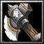

武田家臣
力量型近戰英雄
法術 ：Ｂ 輔助 ：Ｃ 最擅長一對多人 力量：28+2.70（主要） 敏捷：26+2.10 智慧：22+2.00 
Ｗ[主 動] 投擲飛斧對600範圍內的目標投擲飛斧，造成[100/200/300/400]點傷害並昏迷[0.5/1/1.5/2]秒。 消 耗法力[100/120/140/160]，等待時間18秒  增加[30/60/90/150]%攻擊速度。 攻擊時每下額外造成[45/65/85/125]點真實傷害。
|